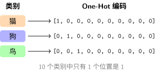

Loss Functions#
In Learning Task Formulations, we discussed the mathematical formulations of classification, regression, and autoregression tasks. Different tasks require different ways to quantify “prediction quality”—which is precisely the role of loss functions.
Essence of Loss Functions: Defining the Optimization Goal#
A loss function measures the discrepancy between model predictions and true targets, transforming training into an optimization problem. Different task types correspond to different loss functions, shaping distinct loss surface geometries that affect the difficulty of optimization via Gradient Descent and Optimization Algorithms.

Loss Functions Define Error Surfaces
Core Roles:
Quantifying error: Converts prediction quality into a computable numeric value
Guiding optimization: Instructs the model “how to adjust” via gradients (see Gradient Descent and Optimization Algorithms for details)
Shaping the landscape: Different loss functions correspond to different optimization difficulties for Gradient Descent and Optimization Algorithms
Loss Functions for Regression Problems#
Mean Squared Error (MSE)#
“Zero Tolerance” for Large Errors#
Imagine playing darts. If you throw very close to the bullseye, the error is small, which is fine. But if you miss by a wide margin, squared error makes this mistake look exceptionally large—much like a teacher deducting 1 point for a minor error but 10 points for a major blunder.
Why square? Because squaring amplifies large deviations. When the error is 2, the penalty is 4; when the error is 4, the penalty jumps to 16. This “zero tolerance for large errors” property causes the model to focus heavily on samples with wildly inaccurate predictions.
Cost: Excessive sensitivity to outliers. If an extreme outlier exists in the dataset, MSE will sacrifice accuracy across most normal samples just to appease that single outlier.
Mathematical Form#
Characteristics:
Heavier penalty on large errors (quadratic growth)
Everywhere differentiable, facilitating gradient computation
Sensitive to outliers

Shape of the MSE Loss Function
Mean Absolute Error (MAE)#
“Fair Referee” Treating All Errors Equally#
MSE acts like a strict teacher—deducting few points for small mistakes but harsh penalties for big ones. MAE, on the other hand, acts like a fair referee: deducting 1 point for a deviation of 1, and 10 points for a deviation of 10, treating all deviations equally.
Advantage: Robust against individual extreme values. If noisy points or outliers exist in the data (such as a 1-billion-dollar mansion mixed into house price data), MAE will not sacrifice prediction accuracy on typical homes just to fit that single outlier.
Cost: Non-differentiable at zero error (forming a sharp V-shape rather than a smooth curve), making optimization slightly more involved. Furthermore, because it treats all errors equally, penalty on small errors is relatively mild, resulting in potentially slower convergence than MSE.
Characteristics:
More robust to outliers (linear penalty)
Non-differentiable at zero (subgradient available)
Huber Loss (Smooth L1)#
A Piecewise Compromise#
Huber loss [Hub64] is like a wise teacher who tailors guidance to circumstance:
For small errors (\(|\text{error}| \le \delta\)): Strict like MSE—quadratic penalty keeps the model sensitive to small errors for fast convergence.
For large errors (\(|\text{error}| > \delta\)): Rational like MAE—linear penalty prevents extreme outliers from dominating training gradients.
Role of parameter \(\delta\): Establishes a threshold (“red line”). Errors within \(\delta\) use quadratic penalty (strict), while errors beyond \(\delta\) switch to linear penalty (tolerant). Object detection tasks commonly use Huber loss because small bounding box errors demand precise localization, whereas large errors might reflect annotation noise that should not overwhelm training.
Mathematical Form#
Characteristics:
Small errors: MSE (smooth)
Large errors: MAE (robust)
Commonly used in object detection and related tasks
Loss Functions for Classification Problems#
Cross-Entropy Loss#
Understanding from an Information Coding Perspective#
Imagine transmitting a message: “This is a picture of a cat.” If there are only 10 possible classes, the most straightforward encoding is assigning an integer ID (0–9). But this approach has a flaw: if the model predicts an 80% probability for “dog” and 20% for “cat”, integer IDs discard all confidence information.
A better approach uses a probability distribution as code, where model outputs like \([0.1, 0.7, 0.05, ...]\) express confidence across classes.
One-Hot Encoding: Converts categorical labels into vectors where the target class position is 1 and all others are 0.

Example of One-Hot Encoding
Why is it called “One-Hot”?
One: Exactly one position contains a 1
Hot: That single position is “active” (hot), while all others are “cold” (0)
Cross-Entropy Formula#
Cross-entropy measures the average code length required when encoding true distribution \(P\) using predicted distribution \(Q\):
For classification problems (where \(P\) is one-hot encoded), this simplifies to:
Key Properties:
More accurate predictions (probability closer to 1) yield lower loss
Heavy penalty for incorrect predictions (loss \(\to \infty\) as predicted probability \(\to 0\))
Yields a remarkably clean gradient when combined with Softmax

Cross-Entropy Loss: Penalizing Confident Wrong Predictions
Why not use MSE for classification?
MSE yields tiny gradients when predicted probabilities approach 0 or 1, slowing down learning
Cross-entropy provides much stronger gradient signals during confident mispredictions
KL Divergence (Kullback-Leibler Divergence)#
Intuition: Extra Coding Penalty#
Imagine you have a perfect weather forecasting model \(P\) (knowing the actual daily probability of rain), but you must use another model \(Q\) for predictions. KL divergence measures how much extra information you need to transmit because you used imperfect model \(Q\) instead of true distribution \(P\).
Intuitive Examples:
If \(Q = P\) (perfect prediction), the extra cost is 0
If predictions are frequently wrong, the extra cost is high
Asymmetric: Cost of approximating \(P\) with \(Q\) \(\neq\) cost of approximating \(Q\) with \(P\)
Relationship to Cross-Entropy#
where \(H(P)\) is the entropy of distribution \(P\) (the minimum possible code length in information theory). Since the ground-truth distribution \(P\) is fixed, \(H(P)\) is constant. Therefore:
Minimizing Cross-Entropy = Minimizing KL Divergence = Driving predicted distribution as close as possible to the true distribution
Application Scenarios#
Variational Autoencoders (VAEs): Constraining the latent distribution \(z\) to match a standard normal distribution
Knowledge Distillation: Teaching a small model to match the “soft predictions” (probability distributions) of a teacher model rather than hard labels
Reinforcement Learning: Constraining policy update step sizes to prevent drastic policy drift
Loss Function Selection Guide#
Problem Type |
Recommended Loss |
Advantages |
Caveats |
|---|---|---|---|
Regression problem |
MSE / MAE |
MSE is smooth and differentiable; MAE is robust |
Choose MAE when dataset contains outliers |
Regression (demanding robustness) |
Huber loss |
Combines benefits of both MSE and MAE |
Requires tuning hyperparameter \(\delta\) |
Binary classification |
Binary cross-entropy |
Strong gradients, fast convergence |
Requires Sigmoid activation on output |
Multi-class classification |
Cross-entropy |
Best performance when paired with Softmax |
PyTorch’s CrossEntropyLoss integrates Softmax |
Distribution matching |
KL divergence |
Measures distribution discrepancy |
Mind asymmetry direction \(P \| Q\) |
PyTorch Implementation Example#
::
Summary#
Loss functions define “what makes a good prediction”, converting training into an optimization problem:
Regression problems: MSE is smooth and easy to optimize; MAE is robust against outliers
Classification problems: Cross-entropy provides strong gradients and is the mainstream choice in deep learning
Distribution matching: KL divergence measures probability distribution discrepancies, serving as a core tool in VAEs and knowledge distillation
Having understood loss functions, we will explore Backpropagation Algorithm—how to efficiently compute gradients and perform error “credit assignment”.
References
Contributors and Revision History
View detailed revision history
-
e2bc8802026-06-13 - Heyan Zhu: fix: missing bib keys in pdf output -
d7c9da72026-05-12 - Heyan Zhu: docs: update sphinx only filter from not pdf to not latex -
a954ca52026-05-11 - Heyan Zhu: docs: revise and restructure documentation, fix formatting, and move env setup and sphinx guide to a separate appendix section -
f159d562026-05-08 - Heyan Zhu: fix: address complaints from the linter -
59126f42026-04-26 - Heyan Zhu: docs(math-fundamentals): update content structure and add citations -
ae2053f2026-04-26 - Heyan Zhu: docs(math-fundamentals): add task-formulations and update related content -
756a7932026-04-25 - Heyan Zhu: docs(math-fundamentals): update content structure and improve explanations -
dcecce42026-01-26 - Heyan Zhu: docs: enrich math fundamentals documentation with code captions and TikZ visualizations -
0c291d72025-12-10 - Heyan Zhu: docs: restructure course materials and add new content